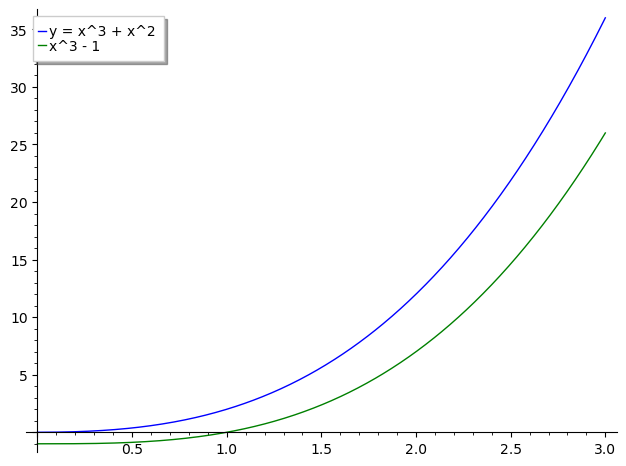
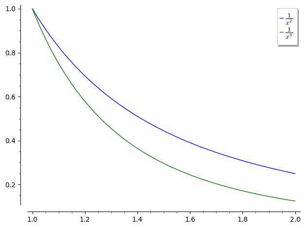
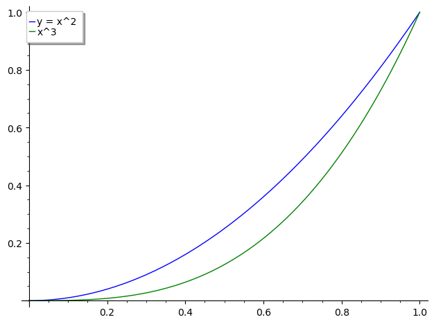
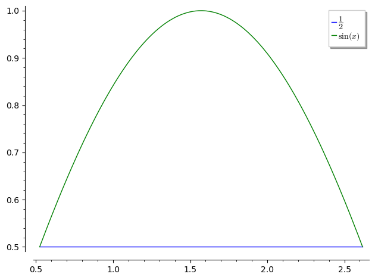
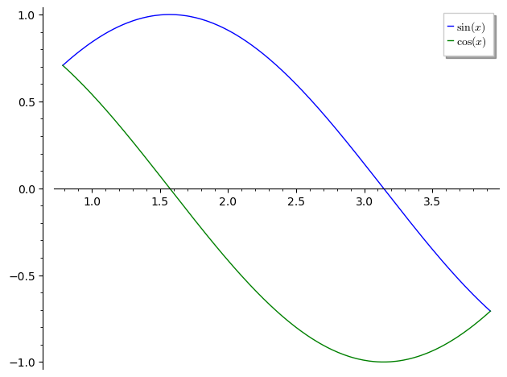
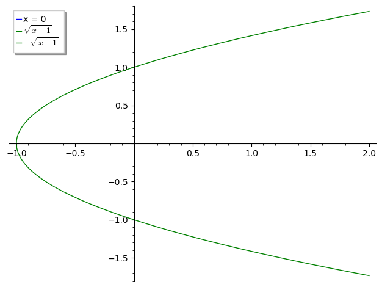

1 Area Between Curves
1.1 Solution 1
Let's plot the graph:
x = var('x') g = Graphics() g += plot(x^3 + x^2, 0, 3, legend_label = "y = x^3 + x^2") g += plot(x^3 - 1, 0, 3, legend_label = "x^3 - 1", color="green") g.show()

Let's find the area between the curves:
\(A = \int_0^3 (x^3 + x^2) - (x^3 - 1)\)
from sage.symbolic.integration.integral import definite_integral x = var('x') definite_integral(x^2 + 1, x, 0, 3)
12
1.2 Solution 2
Let's plot the graph:
x = var('x') g = Graphics() g += plot(1/(x^2),1, 2, legend_label="$\dfrac{1}{x^2}$") g += plot(1/(x^3), 1, 2, legend_label="$\dfrac{1}{x^3}$", color = "green") g.show()

Let's find the area between the curves:
\(A = \int_1^2 \dfrac{1}{x^2} - \dfrac{1}{x^3}\)
x = var('x') definite_integral(1/(x^2) - 1/(x^3), x, 1, 2)
1/8
1.3 Solution 3
Since no interval is given, let's compute the intersection point of the curves.
x = var('x') solve([x^2 == x^3], x)
[x == 0, x == 1]
g1 = x^2 g2 = x^3 [g1(0), g1(1), g2(0), g2(1)]
[0, 1, 0, 1]
So the intersection points of the equations are \((0,0)\) and \((1,1)\).
Let's plot the graph between the intersection points:
x = var('x') g = Graphics() g += plot(x^2, 0, 1, legend_label = "x^2") g += plot(x^3, 0, 1, legend_label = "x^3", color="green") g.show()

Let's find the area between the curves:
\(A = \int_0^1 x^2 - x^3\)
x = var('x') definite_integral((x^2) - (x^3), x, 0, 1)
1/12
1.4 Solution 4
Let's plot the graph:
x = var('x') g = Graphics() g += plot(1/2, pi/6, (5*pi/6), legend_label = "$\dfrac{1}{2}$") g += plot(sin(x), pi/6, (5*pi/6), legend_label = "$\sin(x)$", color="green") g.show()

Let's find the area between the curves:
\(A = \int_{\dfrac{\pi}{6}}^{\dfrac{5\pi}{6}} \sin x - (-\dfrac{1}{2})\)
definite_integral(sin(x) + (1/2), x, pi/6, 5*pi/6)
1/3*pi + sqrt(3)
1.5 Solution 5
Let's plot the graph:
x = var('x') g = Graphics() g += plot(sin(x), pi/4, (5*pi/4), legend_label = "$\sin(x)$") g += plot(cos(x), pi/4, (5*pi/4), legend_label = "$\cos(x)$", color="green") g.show()

Let's find the area between the curves:
\(A = \int_(\pi/4)^(5\pi/4) \sin x - \cos x dx\)
definite_integral(sin(x) - cos(x), x, pi/4, 5*pi/4)
2*sqrt(2)
1.6 Solution 6
The equation of y axis is \(x = 0\) Let's find the intersection points with the curve \(x = y^2 - 1\)
x,y = var('x y') solve([y^2 - 1 == 0], y)
[y == -1, y == 1]
Let's plot the graph:
x,y = var('x y') g = Graphics() g += line([(0,0), (0,1), (0,-1)], legend_label = "x = 0") g += plot(sqrt(x + 1), -1, 2, legend_label = "$\sqrt{x+1}$", color="green") g += plot(-sqrt(x + 1), -1, 2, legend_label = "$-\sqrt{x+1}$", color="green") g.show()

Let's find the area between the curves:
\(A = \int_{-1}^1 \sqrt{x+1} - (-\sqrt{x+1}) dx\)
\(= \int_{-1}^1 2\sqrt{x+1} dx\)
definite_integral(2*sqrt(x+1), x, -1, 1)
8/3*sqrt(2)
1.7 Solution 7
Since no interval is given, let's compute the intersection point of the curves.
x = var('x') solve(sqrt(x) == x/2, x, algorithm='sympy')
[x == 0, x == 4]
Let's compute the points:
g1 = x/2 [g1(0), g1(4)]
[0, 2]
So the intersection points are \((0,0)\) and \((4,2)\)
Let's plot the graph:
x,y = var('x y') g = Graphics() g += plot(sqrt(x), 0, 4, legend_label = "$\sqrt{x}$") g += plot(x/2, 0, 4, legend_label = "$\dfrac{x}{2}$", color="green") g.show()

Let's find the area between the curves:
\(A = \int_0^4 \sqrt{x} - (\dfrac{x}{2}) dx\)
\(= \int_0^4 \sqrt{x} - \dfrac{x}{2}\)
definite_integral(sqrt(x) - (x/2), x, 0, 4)
4/3